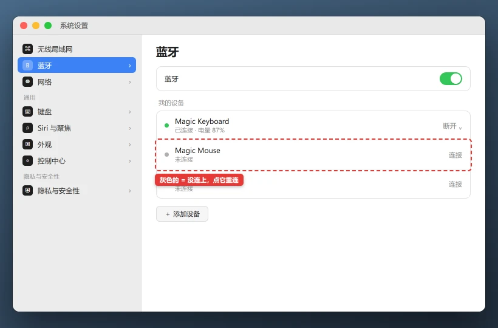

Mac 蓝牙不可用 / 设备突然消失怎么修
忽略蓝牙设备会删除这台 Mac 上的配对记录，需要重新配对；它通常不会清空耳机或鼠标本身的数据。蓝牙键鼠失灵时，请先准备有线键鼠。
💡 一句话结论
所有蓝牙设备都消失，先重启蓝牙模块和 Mac；只有一个设备连不上，删除旧配对后重新配对。蓝牙开关灰色、菜单栏图标消失且重启无效时，再排查系统更新、USB 干扰和硬件诊断。
⚡ 30 秒快速排查（先试这个）
- 控制中心打开蓝牙开关，关闭 10 秒后再打开。
- 确认蓝牙设备有电，并处于“可被发现/配对”模式，而不是只开机。
- 拔掉附近新接入的 USB 3.0 硬盘、扩展坞和无线接收器，再搜索一次。
适用 / 不适用
适用：
- Mac 蓝牙开关能打开，但设备列表一直为空
- 蓝牙耳机、鼠标、键盘突然断开且无法重连
- 更新 macOS 或休眠唤醒后蓝牙不可用
- 蓝牙开关变灰、菜单栏图标消失
不适用：
- 蓝牙耳机能连接但声音输出选错 → 到声音设置检查输出设备
- 蓝牙麦克风没声音 → 看电脑麦克风排障
- USB 无线接收器设备失灵 → 这是 2.4G 接收器，不是蓝牙
- 设备在手机上也找不到 → 先换电池、充电或查设备说明
开始前确认
- Mac 已接电源，设备电量充足
- 有线键鼠可用，避免蓝牙键鼠断开后无法操作
- 知道设备的配对按键或进入配对模式的方法
- 记录问题只影响一个设备还是全部蓝牙设备
怎么确认修好了
蓝牙开关可以连续切换，设备能搜索、配对和断开重连；休眠唤醒后 1 分钟内自动恢复；耳机播放和麦克风、鼠标移动、键盘输入分别测试正常。
还是不行？
- 只有一个蓝牙设备连不上 → 蓝牙耳机 / 键鼠连不上、一直配对失败
- 蓝牙耳机已连接但没有声音 → 到声音设置选择正确输出设备
- 外接显示器或扩展坞同时不识别 → Mac 外接显示器 / 扩展坞不识别
- 蓝牙开关灰色且系统信息看不到控制器 → 联系 Apple 支持检查硬件
- 公司 Mac 禁止蓝牙 → 联系 IT，不要安装第三方蓝牙驱动
预防
- 蓝牙键鼠保持电量，并留一套有线或内建输入备用方案。
- 不把蓝牙接收设备放在 USB 3.0 硬盘和扩展坞旁边。
- macOS 大版本更新前做好备份，更新后逐一测试耳机、鼠标和键盘。
- 不使用宣称可以“增强蓝牙信号”的来路不明驱动。
更新日志
| 日期 | 版本 | 变更 | 作者/审核 |
|---|---|---|---|
| 2026-10-27 | 1.0 | 首版：范围判断、蓝牙重启、重新配对、干扰与硬件诊断 | 内容组 |
分步骤
判断是单个设备还是整个蓝牙模块
目的：两条排查路径完全不同，先确认范围。
操作：
- 打开系统设置 → 蓝牙。
- 看列表中是否有其他曾经配对过的设备。
- 用手机搜索蓝牙设备，确认外设本身能被其他设备发现。
- 用另一台蓝牙设备连接 Mac。
预期结果：明确是 Mac 蓝牙整体异常，还是单个耳机/键鼠异常。失败怎么办？
所有设备都搜不到 → 继续步骤 2；手机也搜不到原设备 → 优先检查设备电池和配对模式。关闭蓝牙、重启 Mac 并重新搜索
目的：蓝牙后台进程卡住时，单纯关开关可能没有真正重置。
操作：

绿点 = 已连接，灰点 = 未连接。设备在列表里但一直是灰点，通常不是配对丢了，而是蓝牙进程卡住——关开关再重启一次往往就能连上。 - 控制中心关闭蓝牙。
- 正常重启 Mac，重新登录桌面。
- 打开蓝牙，等待 10-20 秒再搜索。
- 如果是蓝牙鼠标或键盘无法登录，先用有线键鼠进入系统。
预期结果：蓝牙列表重新出现设备，开关能正常切换且不再灰色。失败怎么办？
开关灰色或菜单栏图标消失 → 继续步骤 5；单个设备仍不在列表 → 继续步骤 3。让设备重新进入配对模式
目的：耳机连接过手机会自动抢连，旧配对状态也会让 Mac 找不到设备。
操作：
- 在手机上关闭该设备的蓝牙或“忘记此设备”。
- 按耳机/鼠标说明书让设备进入配对模式，通常需要长按按钮直到指示灯闪烁。
- Mac 蓝牙列表出现设备后点击连接。
- 键盘鼠标可能需要输入配对码，按屏幕提示操作。
预期结果：设备从“未连接”变为“已连接”，声音或输入功能恢复。失败怎么办？
仍然不出现 → 在 Mac 和手机上分别忽略旧记录，再重新配对。忽略旧配对并重新添加
目的：配对密钥或设备缓存损坏时，保留旧记录会反复连接失败。
操作：
- 系统设置 → 蓝牙，找到设备，点右侧信息按钮。
- 选择“忽略此设备”或“移除此设备”。
- 重启 Mac 和设备。
- 设备进入配对模式后，从 Mac 重新添加。
预期结果：建立新的配对记录，连续断开重连两次都成功。失败怎么办？
配对时立即断线 → 换到远离 USB 集线器和微波炉、路由器等干扰源的位置再试。检查系统更新与硬件状态
目的：蓝牙模块驱动来自 macOS，外部安装的驱动不可靠；反复灰色需要判断硬件。
操作：
- 系统设置 → 通用 → 软件更新，安装可用的 macOS 更新并重启。
- 在“系统信息 → 硬件 → 蓝牙”中确认控制器是否出现。
- 拔掉所有第三方 USB 集线器、扩展坞和无线接收器，只用原装电源测试。
- 蓝牙仍完全不可用，可运行 Apple 诊断检查硬件，并预约 Apple 支持。
预期结果：系统信息能识别蓝牙控制器，更新后开关和搜索恢复正常。失败怎么办？
系统信息里完全没有蓝牙控制器，或 Apple 诊断报硬件错误 → 不要拆机，联系官方售后。
相关教程
最后更新：2026-10-27 · 复核：内容组
读者反馈
这篇教程解决你的问题了吗？
点一下告诉我们结果。「没解决」可以指出问题段落，管理员会回到原文核对并更新。